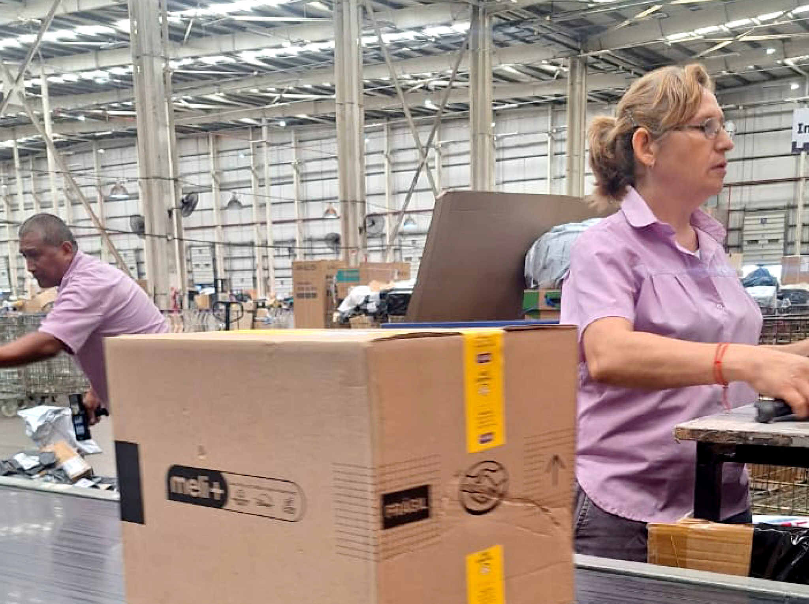
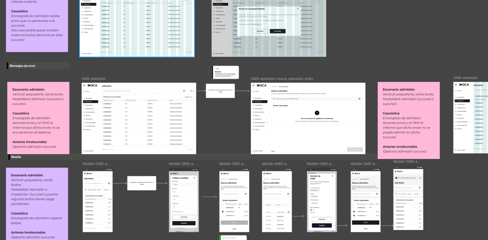
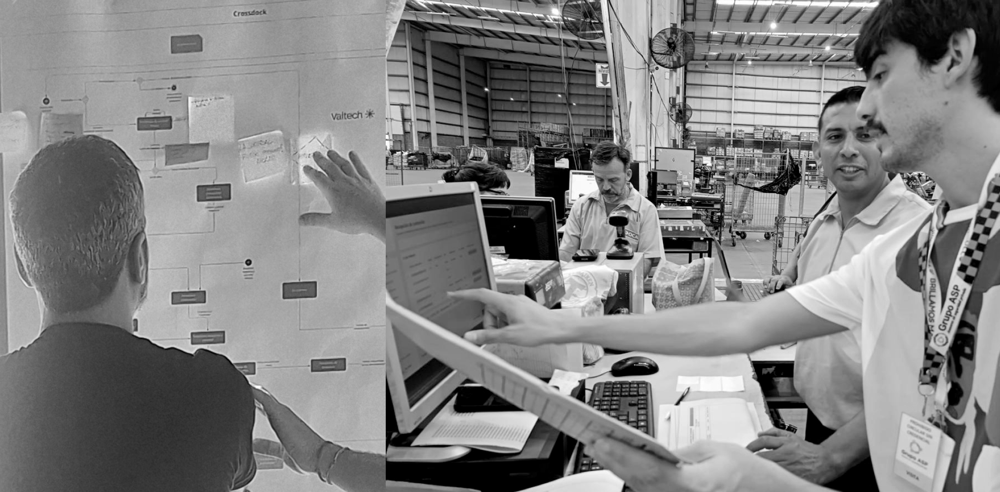
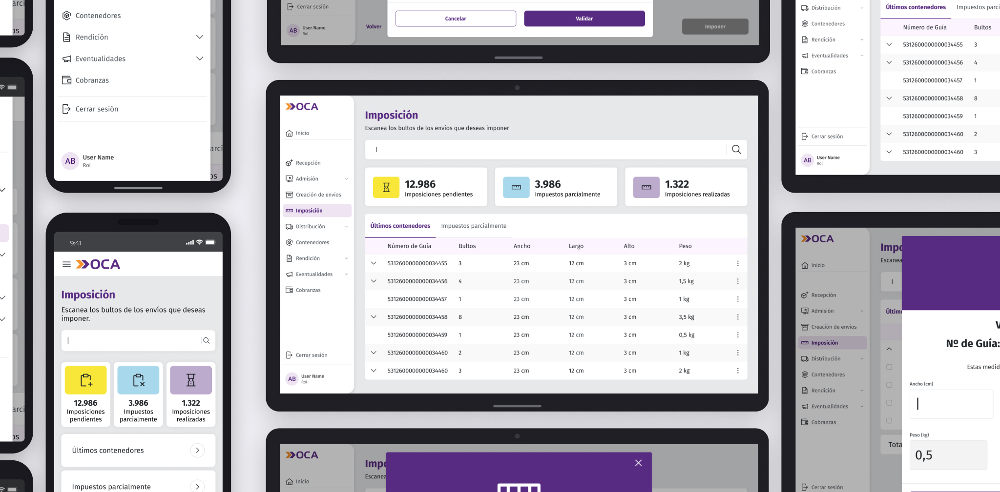

For more than 30 years, OCA's parcel operation ran on a system that had accumulated decades of complexity. The OMS was the bet to replace it. My role was making sure the people who would actually use it had a say in how it was designed.

For more than three decades, OCA's parcel operation ran on a system known internally as OEP. It had been adapted and extended to meet new needs, accumulating technical and operational complexity that was becoming harder to sustain.
The user experience showed its age: overloaded interfaces, complex navigation, multiple menu levels and a logic that heavily depended on prior knowledge from those using it. IT leadership pushed for a new OMS to progressively replace existing systems and build a platform capable of tracking every logistics product.
The first proposals were clean and modern. And they didn't match the reality of plant operations: people who needed to spot critical information from a distance, operate under pressure and make fast decisions in environments with mixed hardware.

I joined the project during the functional definition and process design stage. I worked with Product, Operations Engineering, Systems and the external consultancy responsible for development.
The consultancy's first proposals followed common modern corporate software patterns: clean, minimalist interfaces with heavy reduction of visual noise. But during the first validations, a concrete problem emerged: they didn't match the operational reality of the plants. Operators needed to read critical information from a distance, in noisy environments, under time pressure, with varied hardware.
Readability, information density and visual hierarchy weren't aesthetic details — they were functional conditions.

Historically, many changes to OCA's operating systems were implemented without involving the people who would later use them. The OMS was a chance to change that.
Analysis and documentation of the real processes on the floor: how work was done, what information was critical, when decisions got made and under what conditions. The goal was understanding the work before designing the tool.
Participated in working sessions with IT, operations teams and the consultancy to translate technical requirements into experience-oriented definitions. Design as a mediator between what the system could do and what people actually needed.
Review sessions with operational teams, usage tests and feedback spaces that surfaced problems before development moved forward. Many redesign decisions came directly out of these sessions.
Consolidated findings into concrete recommendations for the development team and the consultancy, with clear prioritization criteria based on real operational impact.

Even though the implementation is still evolving, the project managed to establish something beyond the system itself: a new way of working on operational tools within the organization.
Bringing in research, validation and user feedback early reduced uncertainty, improved design decisions and generated more acceptance of the change among operational teams.
For the first time, the teams operating the system every day could see their own workflows reflected in the design — not as a technical requirement, but as the starting point.